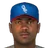
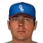
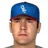
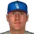
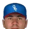
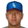
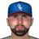
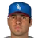
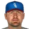
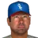

Franchise record book · FBL
Oklahoma City Twisters
Seasons covered: 2002–2002. Only games played for this franchise count.
This club has no pre-2002 history in the export, so its record book is the 2002 season to date. Rate records need 3.1 PA or 1 inning per team game.
Home runs
| # | Player | Season | Team | Home runs |
|---|---|---|---|---|
| #1 | 2002 (FBL) |  Oklahoma City Twisters Oklahoma City Twisters | 6 | |
| #2 |  Bryant Nelson • | 2002 (FBL) | Oklahoma City Twisters | 5 |
| #3 | 2002 (FBL) | Oklahoma City Twisters | 5 | |
| #4 | 2002 (FBL) | Oklahoma City Twisters | 4 | |
| #5 | Ed Sprague • | 2002 (FBL) | Oklahoma City Twisters | 3 |
| #6 |  Bobby Crosby • | 2002 (FBL) | Oklahoma City Twisters | 3 |
| #7 | 2002 (FBL) | Oklahoma City Twisters | 2 | |
| #8 | Jamey Carroll • | 2002 (FBL) | Oklahoma City Twisters | 2 |
| #9 | Ben Grieve • | 2002 (FBL) | Oklahoma City Twisters | 1 |
| #10 | 2002 (FBL) | Oklahoma City Twisters | 1 |
Hits
| # | Player | Season | Team | Hits |
|---|---|---|---|---|
| #1 | 2002 (FBL) | Oklahoma City Twisters | 47 | |
| #2 | Bryant Nelson • | 2002 (FBL) | Oklahoma City Twisters | 46 |
| #3 | Ben Grieve • | 2002 (FBL) | Oklahoma City Twisters | 44 |
| #4 | 2002 (FBL) | Oklahoma City Twisters | 40 | |
| #5 | 2002 (FBL) | Oklahoma City Twisters | 37 | |
| #6 | Jamey Carroll • | 2002 (FBL) | Oklahoma City Twisters | 36 |
| #7 |  Bill Haselman • | 2002 (FBL) | Oklahoma City Twisters | 32 |
| #8 | Bobby Crosby • | 2002 (FBL) | Oklahoma City Twisters | 30 |
| #9 | 2002 (FBL) | Oklahoma City Twisters | 18 | |
| #10 | 2002 (FBL) | Oklahoma City Twisters | 17 |
RBI
| # | Player | Season | Team | RBI |
|---|---|---|---|---|
| #1 | 2002 (FBL) | Oklahoma City Twisters | 29 | |
| #2 | Ben Grieve • | 2002 (FBL) | Oklahoma City Twisters | 21 |
| #3 | Bryant Nelson • | 2002 (FBL) | Oklahoma City Twisters | 19 |
| #4 | Jamey Carroll • | 2002 (FBL) | Oklahoma City Twisters | 17 |
| #5 | 2002 (FBL) | Oklahoma City Twisters | 17 | |
| #6 | 2002 (FBL) | Oklahoma City Twisters | 15 | |
| #7 | 2002 (FBL) | Oklahoma City Twisters | 13 | |
| #8 | Ed Sprague • | 2002 (FBL) | Oklahoma City Twisters | 12 |
| #9 | Bobby Crosby • | 2002 (FBL) | Oklahoma City Twisters | 10 |
| #10 | 2002 (FBL) | Oklahoma City Twisters | 9 |
Runs
| # | Player | Season | Team | Runs |
|---|---|---|---|---|
| #1 | 2002 (FBL) | Oklahoma City Twisters | 29 | |
| #2 | 2002 (FBL) | Oklahoma City Twisters | 28 | |
| #3 | Bryant Nelson • | 2002 (FBL) | Oklahoma City Twisters | 20 |
| #4 | Bobby Crosby • | 2002 (FBL) | Oklahoma City Twisters | 20 |
| #5 | Ben Grieve • | 2002 (FBL) | Oklahoma City Twisters | 17 |
| #6 | Jamey Carroll • | 2002 (FBL) | Oklahoma City Twisters | 17 |
| #7 | 2002 (FBL) | Oklahoma City Twisters | 16 | |
| #8 | Bill Haselman • | 2002 (FBL) | Oklahoma City Twisters | 11 |
| #9 | 2002 (FBL) | Oklahoma City Twisters | 10 | |
| #10 | 2002 (FBL) | Oklahoma City Twisters | 8 |
Stolen bases
| # | Player | Season | Team | Stolen bases |
|---|---|---|---|---|
| #1 | 2002 (FBL) | Oklahoma City Twisters | 9 | |
| #2 | 2002 (FBL) | Oklahoma City Twisters | 6 | |
| #3 | Ben Grieve • | 2002 (FBL) | Oklahoma City Twisters | 6 |
| #4 | Bobby Crosby • | 2002 (FBL) | Oklahoma City Twisters | 4 |
| #5 | Jamey Carroll • | 2002 (FBL) | Oklahoma City Twisters | 3 |
| #6 | Bryant Nelson • | 2002 (FBL) | Oklahoma City Twisters | 2 |
| #7 | 2002 (FBL) | Oklahoma City Twisters | 1 | |
| #8 | 2002 (FBL) | Oklahoma City Twisters | 0 | |
| #9 | Ed Sprague • | 2002 (FBL) | Oklahoma City Twisters | 0 |
| #10 | 2002 (FBL) | Oklahoma City Twisters | 0 |
Doubles
| # | Player | Season | Team | Doubles |
|---|---|---|---|---|
| #1 | Jamey Carroll • | 2002 (FBL) | Oklahoma City Twisters | 14 |
| #2 | 2002 (FBL) | Oklahoma City Twisters | 12 | |
| #3 | Ben Grieve • | 2002 (FBL) | Oklahoma City Twisters | 11 |
| #4 | Bobby Crosby • | 2002 (FBL) | Oklahoma City Twisters | 10 |
| #5 | Bill Haselman • | 2002 (FBL) | Oklahoma City Twisters | 7 |
| #6 | 2002 (FBL) | Oklahoma City Twisters | 6 | |
| #7 | Bryant Nelson • | 2002 (FBL) | Oklahoma City Twisters | 6 |
| #8 | 2002 (FBL) | Oklahoma City Twisters | 6 | |
| #9 | 2002 (FBL) | Oklahoma City Twisters | 5 | |
| #10 | Ed Sprague • | 2002 (FBL) | Oklahoma City Twisters | 4 |
Triples
| # | Player | Season | Team | Triples |
|---|---|---|---|---|
| #1 | 2002 (FBL) | Oklahoma City Twisters | 2 | |
| #2 | 2002 (FBL) | Oklahoma City Twisters | 2 | |
| #3 | Jamey Carroll • | 2002 (FBL) | Oklahoma City Twisters | 1 |
| #4 | 2002 (FBL) | Oklahoma City Twisters | 0 | |
| #5 | 2002 (FBL) | Oklahoma City Twisters | 0 | |
| #6 | Bryant Nelson • | 2002 (FBL) | Oklahoma City Twisters | 0 |
| #7 | Ed Sprague • | 2002 (FBL) | Oklahoma City Twisters | 0 |
| #8 | Ben Grieve • | 2002 (FBL) | Oklahoma City Twisters | 0 |
| #9 | 2002 (FBL) | Oklahoma City Twisters | 0 | |
| #10 |  Brook Fordyce • | 2002 (FBL) | Oklahoma City Twisters | 0 |
Walks
| # | Player | Season | Team | Walks |
|---|---|---|---|---|
| #1 | Ben Grieve • | 2002 (FBL) | Oklahoma City Twisters | 16 |
| #2 | Bobby Crosby • | 2002 (FBL) | Oklahoma City Twisters | 16 |
| #3 | 2002 (FBL) | Oklahoma City Twisters | 15 | |
| #4 | 2002 (FBL) | Oklahoma City Twisters | 14 | |
| #5 | Jamey Carroll • | 2002 (FBL) | Oklahoma City Twisters | 11 |
| #6 | 2002 (FBL) | Oklahoma City Twisters | 10 | |
| #7 | 2002 (FBL) | Oklahoma City Twisters | 9 | |
| #8 | Bill Haselman • | 2002 (FBL) | Oklahoma City Twisters | 9 |
| #9 | Bryant Nelson • | 2002 (FBL) | Oklahoma City Twisters | 7 |
| #10 | Ed Sprague • | 2002 (FBL) | Oklahoma City Twisters | 5 |
Total bases
| # | Player | Season | Team | Total bases |
|---|---|---|---|---|
| #1 | 2002 (FBL) | Oklahoma City Twisters | 75 | |
| #2 | Bryant Nelson • | 2002 (FBL) | Oklahoma City Twisters | 67 |
| #3 | 2002 (FBL) | Oklahoma City Twisters | 62 | |
| #4 | Ben Grieve • | 2002 (FBL) | Oklahoma City Twisters | 58 |
| #5 | Jamey Carroll • | 2002 (FBL) | Oklahoma City Twisters | 58 |
| #6 | 2002 (FBL) | Oklahoma City Twisters | 55 | |
| #7 | Bobby Crosby • | 2002 (FBL) | Oklahoma City Twisters | 49 |
| #8 | Bill Haselman • | 2002 (FBL) | Oklahoma City Twisters | 39 |
| #9 | 2002 (FBL) | Oklahoma City Twisters | 37 | |
| #10 | Ed Sprague • | 2002 (FBL) | Oklahoma City Twisters | 26 |
Batting average qualified
| # | Player | Season | Team | Batting average |
|---|---|---|---|---|
| #1 | Bryant Nelson • | 2002 (FBL) | Oklahoma City Twisters | .322 |
| #2 | 2002 (FBL) | Oklahoma City Twisters | .305 | |
| #3 | Ben Grieve • | 2002 (FBL) | Oklahoma City Twisters | .293 |
| #4 | Jamey Carroll • | 2002 (FBL) | Oklahoma City Twisters | .283 |
| #5 | 2002 (FBL) | Oklahoma City Twisters | .268 | |
| #6 | 2002 (FBL) | Oklahoma City Twisters | .259 | |
| #7 | Bobby Crosby • | 2002 (FBL) | Oklahoma City Twisters | .216 |
On-base % qualified
| # | Player | Season | Team | On-base % |
|---|---|---|---|---|
| #1 | Ben Grieve • | 2002 (FBL) | Oklahoma City Twisters | .371 |
| #2 | 2002 (FBL) | Oklahoma City Twisters | .355 | |
| #3 | Bryant Nelson • | 2002 (FBL) | Oklahoma City Twisters | .349 |
| #4 | 2002 (FBL) | Oklahoma City Twisters | .339 | |
| #5 | Jamey Carroll • | 2002 (FBL) | Oklahoma City Twisters | .338 |
| #6 | 2002 (FBL) | Oklahoma City Twisters | .323 | |
| #7 | Bobby Crosby • | 2002 (FBL) | Oklahoma City Twisters | .310 |
Slugging % qualified
| # | Player | Season | Team | Slugging % |
|---|---|---|---|---|
| #1 | 2002 (FBL) | Oklahoma City Twisters | .487 | |
| #2 | Bryant Nelson • | 2002 (FBL) | Oklahoma City Twisters | .469 |
| #3 | Jamey Carroll • | 2002 (FBL) | Oklahoma City Twisters | .457 |
| #4 | 2002 (FBL) | Oklahoma City Twisters | .416 | |
| #5 | Ben Grieve • | 2002 (FBL) | Oklahoma City Twisters | .387 |
| #6 | 2002 (FBL) | Oklahoma City Twisters | .385 | |
| #7 | Bobby Crosby • | 2002 (FBL) | Oklahoma City Twisters | .353 |
OPS qualified
| # | Player | Season | Team | OPS |
|---|---|---|---|---|
| #1 | 2002 (FBL) | Oklahoma City Twisters | .842 | |
| #2 | Bryant Nelson • | 2002 (FBL) | Oklahoma City Twisters | .817 |
| #3 | Jamey Carroll • | 2002 (FBL) | Oklahoma City Twisters | .795 |
| #4 | Ben Grieve • | 2002 (FBL) | Oklahoma City Twisters | .757 |
| #5 | 2002 (FBL) | Oklahoma City Twisters | .756 | |
| #6 | 2002 (FBL) | Oklahoma City Twisters | .707 | |
| #7 | Bobby Crosby • | 2002 (FBL) | Oklahoma City Twisters | .663 |
WAR (OOTP)
| # | Player | Season | Team | WAR (OOTP) |
|---|---|---|---|---|
| #1 | 2002 (FBL) | Oklahoma City Twisters | 1.3 | |
| #2 | Bill Haselman • | 2002 (FBL) | Oklahoma City Twisters | 0.8 |
| #3 | Bryant Nelson • | 2002 (FBL) | Oklahoma City Twisters | 0.6 |
| #4 | 2002 (FBL) | Oklahoma City Twisters | 0.5 | |
| #5 | 2002 (FBL) | Oklahoma City Twisters | 0.4 | |
| #6 | Jamey Carroll • | 2002 (FBL) | Oklahoma City Twisters | 0.2 |
| #7 | 2002 (FBL) | Oklahoma City Twisters | 0.2 | |
| #8 | 2002 (FBL) | Oklahoma City Twisters | 0.1 | |
| #9 | 2002 (FBL) | Oklahoma City Twisters | 0.0 | |
| #10 | 2002 (FBL) | Oklahoma City Twisters | 0.0 |
Wins
| # | Player | Season | Team | Wins |
|---|---|---|---|---|
| #1 |  Brian Fuentes • | 2002 (FBL) | Oklahoma City Twisters | 4 |
| #2 | Leonardo Gonzalez • | 2002 (FBL) | Oklahoma City Twisters | 3 |
| #3 | Troy Mattes • | 2002 (FBL) | Oklahoma City Twisters | 2 |
| #4 | Mike Gosling • | 2002 (FBL) | Oklahoma City Twisters | 2 |
| #5 | Kirk Saarloos • | 2002 (FBL) | Oklahoma City Twisters | 1 |
| #6 |  Oscar Henriquez • | 2002 (FBL) | Oklahoma City Twisters | 1 |
| #7 |  Lee Gardner • | 2002 (FBL) | Oklahoma City Twisters | 1 |
| #8 | 2002 (FBL) | Oklahoma City Twisters | 1 | |
| #9 |  Ricardo Rincon • | 2002 (FBL) | Oklahoma City Twisters | 1 |
| #10 | Matt Miller • | 2002 (FBL) | Oklahoma City Twisters | 1 |
Strikeouts
| # | Player | Season | Team | Strikeouts |
|---|---|---|---|---|
| #1 | 2002 (FBL) | Oklahoma City Twisters | 41 | |
| #2 | Oscar Henriquez • | 2002 (FBL) | Oklahoma City Twisters | 28 |
| #3 | Brian Fuentes • | 2002 (FBL) | Oklahoma City Twisters | 25 |
| #4 | Mike Gosling • | 2002 (FBL) | Oklahoma City Twisters | 25 |
| #5 | Matt Miller • | 2002 (FBL) | Oklahoma City Twisters | 21 |
| #6 | Kirk Saarloos • | 2002 (FBL) | Oklahoma City Twisters | 20 |
| #7 | Leonardo Gonzalez • | 2002 (FBL) | Oklahoma City Twisters | 19 |
| #8 | Troy Mattes • | 2002 (FBL) | Oklahoma City Twisters | 18 |
| #9 | Ricardo Rincon • | 2002 (FBL) | Oklahoma City Twisters | 18 |
| #10 | Travis Miller • | 2002 (FBL) | Oklahoma City Twisters | 16 |
Saves
| # | Player | Season | Team | Saves |
|---|---|---|---|---|
| #1 | Ricardo Rincon • | 2002 (FBL) | Oklahoma City Twisters | 7 |
| #2 | Matt Miller • | 2002 (FBL) | Oklahoma City Twisters | 6 |
| #3 | Brian Fuentes • | 2002 (FBL) | Oklahoma City Twisters | 1 |
| #4 | Travis Miller • | 2002 (FBL) | Oklahoma City Twisters | 1 |
| #5 | Kirk Saarloos • | 2002 (FBL) | Oklahoma City Twisters | 0 |
| #6 | Oscar Henriquez • | 2002 (FBL) | Oklahoma City Twisters | 0 |
| #7 |  Kent Mercker • | 2002 (FBL) | Oklahoma City Twisters | 0 |
| #8 | Troy Mattes • | 2002 (FBL) | Oklahoma City Twisters | 0 |
| #9 | Lee Gardner • | 2002 (FBL) | Oklahoma City Twisters | 0 |
| #10 | 2002 (FBL) | Oklahoma City Twisters | 0 |
Innings
| # | Player | Season | Team | Innings |
|---|---|---|---|---|
| #1 | 2002 (FBL) | Oklahoma City Twisters | 52.1 | |
| #2 | Mike Gosling • | 2002 (FBL) | Oklahoma City Twisters | 42.1 |
| #3 | Leonardo Gonzalez • | 2002 (FBL) | Oklahoma City Twisters | 37.2 |
| #4 | Kirk Saarloos • | 2002 (FBL) | Oklahoma City Twisters | 33.0 |
| #5 | Troy Mattes • | 2002 (FBL) | Oklahoma City Twisters | 32.1 |
| #6 |  Mercedes Esquer • | 2002 (FBL) | Oklahoma City Twisters | 28.0 |
| #7 | Oscar Henriquez • | 2002 (FBL) | Oklahoma City Twisters | 26.1 |
| #8 | Brian Fuentes • | 2002 (FBL) | Oklahoma City Twisters | 23.0 |
| #9 | Travis Miller • | 2002 (FBL) | Oklahoma City Twisters | 21.2 |
| #10 | Matt Miller • | 2002 (FBL) | Oklahoma City Twisters | 19.2 |
Complete games
| # | Player | Season | Team | Complete games |
|---|---|---|---|---|
| #1 | Kirk Saarloos • | 2002 (FBL) | Oklahoma City Twisters | 0 |
| #2 | Brian Fuentes • | 2002 (FBL) | Oklahoma City Twisters | 0 |
| #3 | Oscar Henriquez • | 2002 (FBL) | Oklahoma City Twisters | 0 |
| #4 | Kent Mercker • | 2002 (FBL) | Oklahoma City Twisters | 0 |
| #5 | Troy Mattes • | 2002 (FBL) | Oklahoma City Twisters | 0 |
| #6 | Travis Miller • | 2002 (FBL) | Oklahoma City Twisters | 0 |
| #7 | Lee Gardner • | 2002 (FBL) | Oklahoma City Twisters | 0 |
| #8 | 2002 (FBL) | Oklahoma City Twisters | 0 | |
| #9 | Ricardo Rincon • | 2002 (FBL) | Oklahoma City Twisters | 0 |
| #10 | Matt Miller • | 2002 (FBL) | Oklahoma City Twisters | 0 |
Shutouts
| # | Player | Season | Team | Shutouts |
|---|---|---|---|---|
| #1 | Kirk Saarloos • | 2002 (FBL) | Oklahoma City Twisters | 0 |
| #2 | Brian Fuentes • | 2002 (FBL) | Oklahoma City Twisters | 0 |
| #3 | Oscar Henriquez • | 2002 (FBL) | Oklahoma City Twisters | 0 |
| #4 | Kent Mercker • | 2002 (FBL) | Oklahoma City Twisters | 0 |
| #5 | Troy Mattes • | 2002 (FBL) | Oklahoma City Twisters | 0 |
| #6 | Travis Miller • | 2002 (FBL) | Oklahoma City Twisters | 0 |
| #7 | Lee Gardner • | 2002 (FBL) | Oklahoma City Twisters | 0 |
| #8 | 2002 (FBL) | Oklahoma City Twisters | 0 | |
| #9 | Ricardo Rincon • | 2002 (FBL) | Oklahoma City Twisters | 0 |
| #10 | Matt Miller • | 2002 (FBL) | Oklahoma City Twisters | 0 |
ERA qualified
| # | Player | Season | Team | ERA |
|---|---|---|---|---|
| #1 | Mike Gosling • | 2002 (FBL) | Oklahoma City Twisters | 5.74 |
| #2 | 2002 (FBL) | Oklahoma City Twisters | 5.85 |
WHIP qualified
| # | Player | Season | Team | WHIP |
|---|---|---|---|---|
| #1 | 2002 (FBL) | Oklahoma City Twisters | 1.62 | |
| #2 | Mike Gosling • | 2002 (FBL) | Oklahoma City Twisters | 1.68 |
K/9 qualified
| # | Player | Season | Team | K/9 |
|---|---|---|---|---|
| #1 | 2002 (FBL) | Oklahoma City Twisters | 7.1 | |
| #2 | Mike Gosling • | 2002 (FBL) | Oklahoma City Twisters | 5.3 |
WAR (OOTP)
| # | Player | Season | Team | WAR (OOTP) |
|---|---|---|---|---|
| #1 | Kirk Saarloos • | 2002 (FBL) | Oklahoma City Twisters | 0.5 |
| #2 | Ricardo Rincon • | 2002 (FBL) | Oklahoma City Twisters | 0.4 |
| #3 | Brian Fuentes • | 2002 (FBL) | Oklahoma City Twisters | 0.4 |
| #4 | 2002 (FBL) | Oklahoma City Twisters | 0.2 | |
| #5 | Matt Miller • | 2002 (FBL) | Oklahoma City Twisters | 0.2 |
| #6 | Leonardo Gonzalez • | 2002 (FBL) | Oklahoma City Twisters | 0.2 |
| #7 | Mike Gosling • | 2002 (FBL) | Oklahoma City Twisters | 0.2 |
| #8 | Travis Miller • | 2002 (FBL) | Oklahoma City Twisters | 0.1 |
| #9 | Troy Mattes • | 2002 (FBL) | Oklahoma City Twisters | 0.1 |
| #10 | Mercedes Esquer • | 2002 (FBL) | Oklahoma City Twisters | 0.1 |
Home runs
| # | Player | Years | Home runs |
|---|---|---|---|
| #1 | 1993–02 | 6 | |
| #2 | Bryant Nelson • | 2002–02 | 5 |
| #3 | 1990–02 | 5 | |
| #4 | 1998–02 | 4 | |
| #5 | Ed Sprague • | 1991–02 | 3 |
| #6 | Bobby Crosby • | 2002–02 | 3 |
| #7 | 1996–02 | 2 | |
| #8 | Jamey Carroll • | 2002–02 | 2 |
| #9 | Ben Grieve • | 1997–02 | 1 |
| #10 | 1999–02 | 1 |
Hits
| # | Player | Years | Hits |
|---|---|---|---|
| #1 | 1993–02 | 47 | |
| #2 | Bryant Nelson • | 2002–02 | 46 |
| #3 | Ben Grieve • | 1997–02 | 44 |
| #4 | 1996–02 | 40 | |
| #5 | 1998–02 | 37 | |
| #6 | Jamey Carroll • | 2002–02 | 36 |
| #7 | Bill Haselman • | 1990–02 | 32 |
| #8 | Bobby Crosby • | 2002–02 | 30 |
| #9 | 1990–02 | 18 | |
| #10 | 1999–02 | 17 |
RBI
| # | Player | Years | RBI |
|---|---|---|---|
| #1 | 1993–02 | 29 | |
| #2 | Ben Grieve • | 1997–02 | 21 |
| #3 | Bryant Nelson • | 2002–02 | 19 |
| #4 | Jamey Carroll • | 2002–02 | 17 |
| #5 | 1998–02 | 17 | |
| #6 | 1990–02 | 15 | |
| #7 | 1996–02 | 13 | |
| #8 | Ed Sprague • | 1991–02 | 12 |
| #9 | Bobby Crosby • | 2002–02 | 10 |
| #10 | 1999–02 | 9 |
Runs
| # | Player | Years | Runs |
|---|---|---|---|
| #1 | 1996–02 | 29 | |
| #2 | 1993–02 | 28 | |
| #3 | Bryant Nelson • | 2002–02 | 20 |
| #4 | Bobby Crosby • | 2002–02 | 20 |
| #5 | Ben Grieve • | 1997–02 | 17 |
| #6 | Jamey Carroll • | 2002–02 | 17 |
| #7 | 1998–02 | 16 | |
| #8 | Bill Haselman • | 1990–02 | 11 |
| #9 | 1990–02 | 10 | |
| #10 | 1999–02 | 8 |
Stolen bases
| # | Player | Years | Stolen bases |
|---|---|---|---|
| #1 | 1996–02 | 9 | |
| #2 | 1993–02 | 6 | |
| #3 | Ben Grieve • | 1997–02 | 6 |
| #4 | Bobby Crosby • | 2002–02 | 4 |
| #5 | Jamey Carroll • | 2002–02 | 3 |
| #6 | Bryant Nelson • | 2002–02 | 2 |
| #7 | 1993–02 | 1 | |
| #8 | 1996–02 | 0 | |
| #9 | Ed Sprague • | 1991–02 | 0 |
| #10 | 1999–02 | 0 |
Doubles
| # | Player | Years | Doubles |
|---|---|---|---|
| #1 | Jamey Carroll • | 2002–02 | 14 |
| #2 | 1996–02 | 12 | |
| #3 | Ben Grieve • | 1997–02 | 11 |
| #4 | Bobby Crosby • | 2002–02 | 10 |
| #5 | Bill Haselman • | 1990–02 | 7 |
| #6 | 1993–02 | 6 | |
| #7 | Bryant Nelson • | 2002–02 | 6 |
| #8 | 1998–02 | 6 | |
| #9 | 1999–02 | 5 | |
| #10 | Ed Sprague • | 1991–02 | 4 |
Triples
| # | Player | Years | Triples |
|---|---|---|---|
| #1 | 1993–02 | 2 | |
| #2 | 1996–02 | 2 | |
| #3 | Jamey Carroll • | 2002–02 | 1 |
| #4 | 1996–02 | 0 | |
| #5 | 1993–02 | 0 | |
| #6 | Bryant Nelson • | 2002–02 | 0 |
| #7 | Ed Sprague • | 1991–02 | 0 |
| #8 | Ben Grieve • | 1997–02 | 0 |
| #9 | 1999–02 | 0 | |
| #10 | Brook Fordyce • | 1995–02 | 0 |
Walks
| # | Player | Years | Walks |
|---|---|---|---|
| #1 | Ben Grieve • | 1997–02 | 16 |
| #2 | Bobby Crosby • | 2002–02 | 16 |
| #3 | 1996–02 | 15 | |
| #4 | 1998–02 | 14 | |
| #5 | Jamey Carroll • | 2002–02 | 11 |
| #6 | 1993–02 | 10 | |
| #7 | 1990–02 | 9 | |
| #8 | Bill Haselman • | 1990–02 | 9 |
| #9 | Bryant Nelson • | 2002–02 | 7 |
| #10 | Ed Sprague • | 1991–02 | 5 |
Total bases
| # | Player | Years | Total bases |
|---|---|---|---|
| #1 | 1993–02 | 75 | |
| #2 | Bryant Nelson • | 2002–02 | 67 |
| #3 | 1996–02 | 62 | |
| #4 | Ben Grieve • | 1997–02 | 58 |
| #5 | Jamey Carroll • | 2002–02 | 58 |
| #6 | 1998–02 | 55 | |
| #7 | Bobby Crosby • | 2002–02 | 49 |
| #8 | Bill Haselman • | 1990–02 | 39 |
| #9 | 1990–02 | 37 | |
| #10 | Ed Sprague • | 1991–02 | 26 |
Batting average min 2,000 PA
| # | Player | Years | Batting average |
|---|
On-base % min 2,000 PA
| # | Player | Years | On-base % |
|---|
Slugging % min 2,000 PA
| # | Player | Years | Slugging % |
|---|
OPS min 2,000 PA
| # | Player | Years | OPS |
|---|
WAR (OOTP)
| # | Player | Years | WAR (OOTP) |
|---|---|---|---|
| #1 | 1993–02 | 1.3 | |
| #2 | Bill Haselman • | 1990–02 | 0.8 |
| #3 | Bryant Nelson • | 2002–02 | 0.6 |
| #4 | 1990–02 | 0.5 | |
| #5 | 1996–02 | 0.4 | |
| #6 | Jamey Carroll • | 2002–02 | 0.2 |
| #7 | 1998–02 | 0.2 | |
| #8 | 1993–02 | 0.1 | |
| #9 | 2002–02 | 0.0 | |
| #10 | 2002–02 | 0.0 |
Wins
| # | Player | Years | Wins |
|---|---|---|---|
| #1 | Brian Fuentes • | 2001–02 | 4 |
| #2 | Leonardo Gonzalez • | 2002–02 | 3 |
| #3 | Troy Mattes • | 2001–02 | 2 |
| #4 | Mike Gosling • | 2002–02 | 2 |
| #5 | Kirk Saarloos • | 2002–02 | 1 |
| #6 | Oscar Henriquez • | 1997–02 | 1 |
| #7 | Lee Gardner • | 2002–02 | 1 |
| #8 | 2001–02 | 1 | |
| #9 | Ricardo Rincon • | 1997–02 | 1 |
| #10 | Matt Miller • | 2002–02 | 1 |
Strikeouts
| # | Player | Years | Strikeouts |
|---|---|---|---|
| #1 | 2001–02 | 41 | |
| #2 | Oscar Henriquez • | 1997–02 | 28 |
| #3 | Brian Fuentes • | 2001–02 | 25 |
| #4 | Mike Gosling • | 2002–02 | 25 |
| #5 | Matt Miller • | 2002–02 | 21 |
| #6 | Kirk Saarloos • | 2002–02 | 20 |
| #7 | Leonardo Gonzalez • | 2002–02 | 19 |
| #8 | Troy Mattes • | 2001–02 | 18 |
| #9 | Ricardo Rincon • | 1997–02 | 18 |
| #10 | Travis Miller • | 1996–02 | 16 |
Saves
| # | Player | Years | Saves |
|---|---|---|---|
| #1 | Ricardo Rincon • | 1997–02 | 7 |
| #2 | Matt Miller • | 2002–02 | 6 |
| #3 | Brian Fuentes • | 2001–02 | 1 |
| #4 | Travis Miller • | 1996–02 | 1 |
| #5 | Kirk Saarloos • | 2002–02 | 0 |
| #6 | Oscar Henriquez • | 1997–02 | 0 |
| #7 | Kent Mercker • | 1989–02 | 0 |
| #8 | Troy Mattes • | 2001–02 | 0 |
| #9 | Lee Gardner • | 2002–02 | 0 |
| #10 | 2001–02 | 0 |
Innings
| # | Player | Years | Innings |
|---|---|---|---|
| #1 | 2001–02 | 52.1 | |
| #2 | Mike Gosling • | 2002–02 | 42.1 |
| #3 | Leonardo Gonzalez • | 2002–02 | 37.2 |
| #4 | Kirk Saarloos • | 2002–02 | 33.0 |
| #5 | Troy Mattes • | 2001–02 | 32.1 |
| #6 | Mercedes Esquer • | 2002–02 | 28.0 |
| #7 | Oscar Henriquez • | 1997–02 | 26.1 |
| #8 | Brian Fuentes • | 2001–02 | 23.0 |
| #9 | Travis Miller • | 1996–02 | 21.2 |
| #10 | Matt Miller • | 2002–02 | 19.2 |
Complete games
| # | Player | Years | Complete games |
|---|---|---|---|
| #1 | Kirk Saarloos • | 2002–02 | 0 |
| #2 | Brian Fuentes • | 2001–02 | 0 |
| #3 | Oscar Henriquez • | 1997–02 | 0 |
| #4 | Kent Mercker • | 1989–02 | 0 |
| #5 | Troy Mattes • | 2001–02 | 0 |
| #6 | Travis Miller • | 1996–02 | 0 |
| #7 | Lee Gardner • | 2002–02 | 0 |
| #8 | 2001–02 | 0 | |
| #9 | Ricardo Rincon • | 1997–02 | 0 |
| #10 | Matt Miller • | 2002–02 | 0 |
Shutouts
| # | Player | Years | Shutouts |
|---|---|---|---|
| #1 | Kirk Saarloos • | 2002–02 | 0 |
| #2 | Brian Fuentes • | 2001–02 | 0 |
| #3 | Oscar Henriquez • | 1997–02 | 0 |
| #4 | Kent Mercker • | 1989–02 | 0 |
| #5 | Troy Mattes • | 2001–02 | 0 |
| #6 | Travis Miller • | 1996–02 | 0 |
| #7 | Lee Gardner • | 2002–02 | 0 |
| #8 | 2001–02 | 0 | |
| #9 | Ricardo Rincon • | 1997–02 | 0 |
| #10 | Matt Miller • | 2002–02 | 0 |
ERA min 500 IP
| # | Player | Years | ERA |
|---|
WHIP min 500 IP
| # | Player | Years | WHIP |
|---|
K/9 min 500 IP
| # | Player | Years | K/9 |
|---|
WAR (OOTP)
| # | Player | Years | WAR (OOTP) |
|---|---|---|---|
| #1 | Kirk Saarloos • | 2002–02 | 0.5 |
| #2 | Ricardo Rincon • | 1997–02 | 0.4 |
| #3 | Brian Fuentes • | 2001–02 | 0.4 |
| #4 | 2001–02 | 0.2 | |
| #5 | Matt Miller • | 2002–02 | 0.2 |
| #6 | Leonardo Gonzalez • | 2002–02 | 0.2 |
| #7 | Mike Gosling • | 2002–02 | 0.2 |
| #8 | Travis Miller • | 1996–02 | 0.1 |
| #9 | Troy Mattes • | 2001–02 | 0.1 |
| #10 | Mercedes Esquer • | 2002–02 | 0.1 |